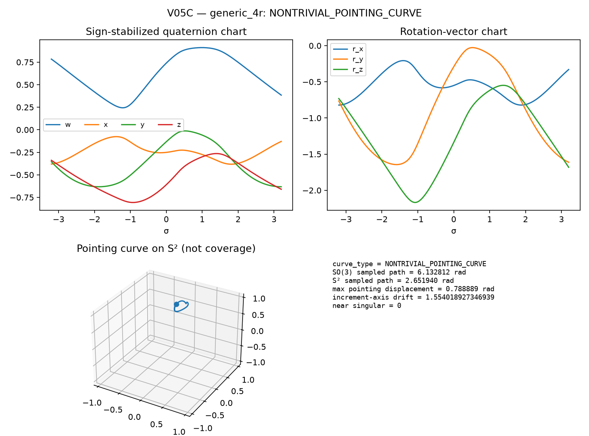
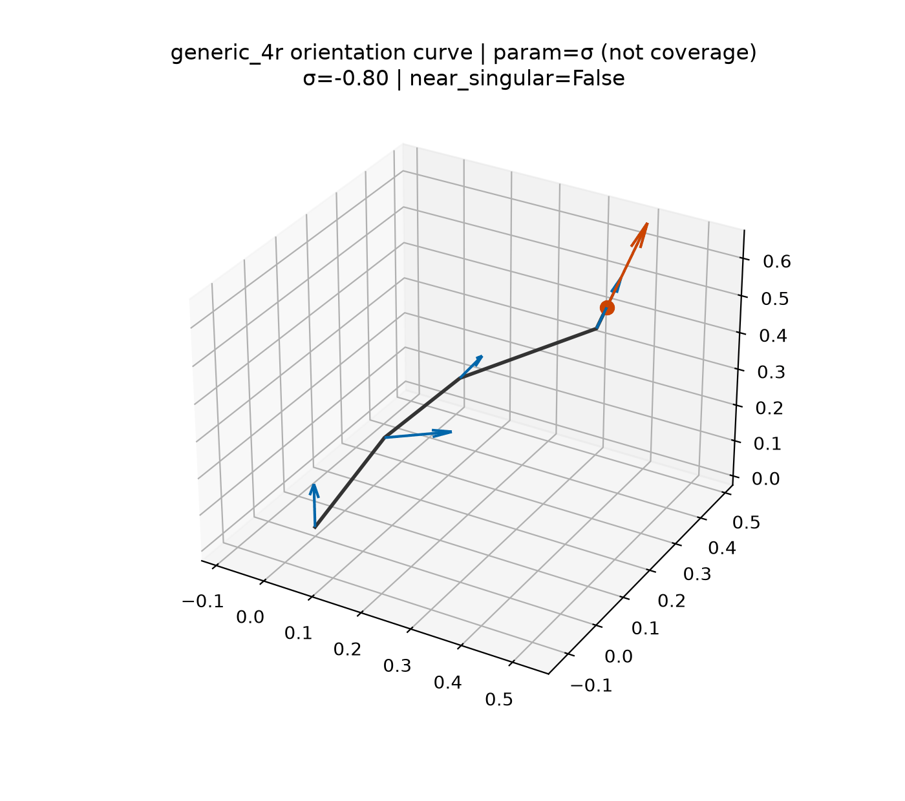
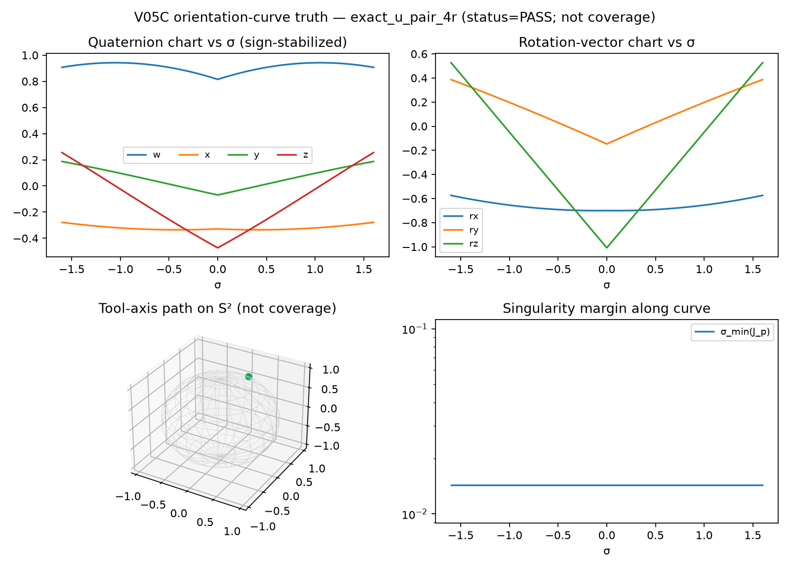
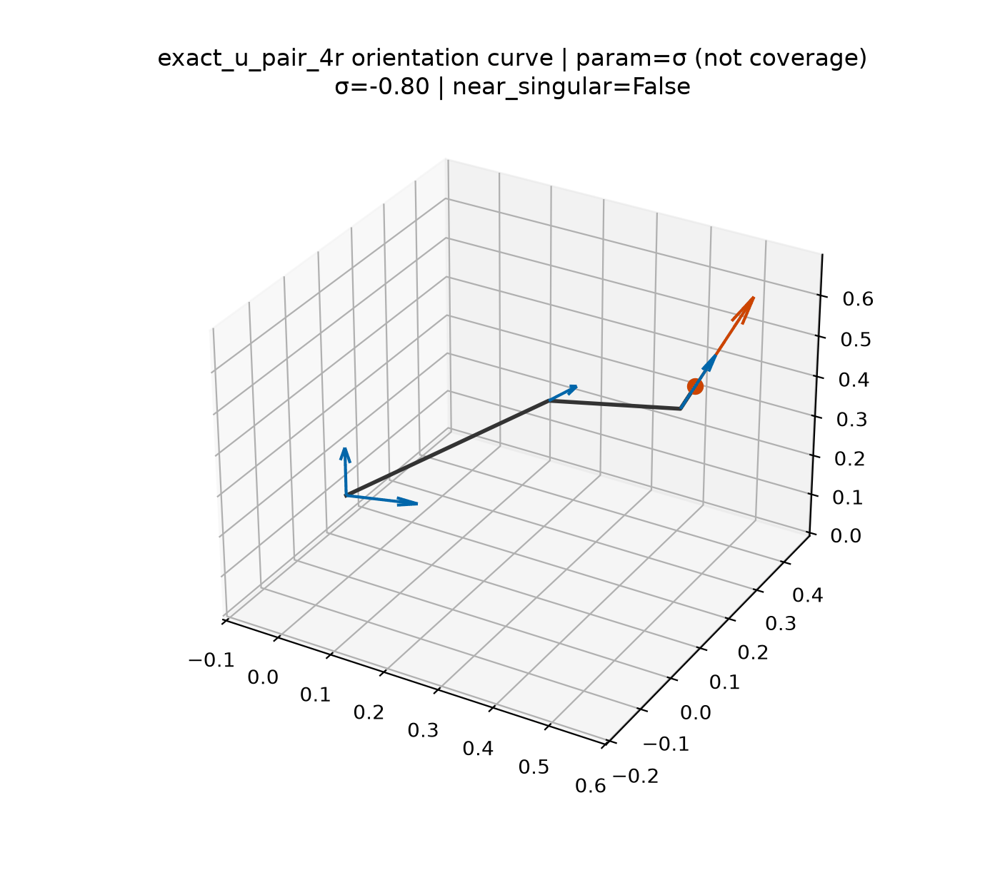
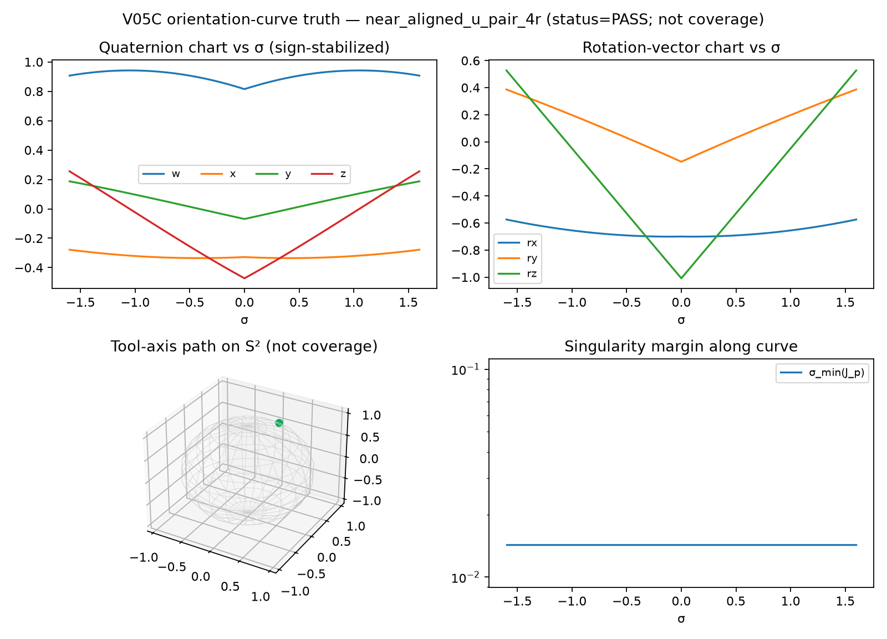
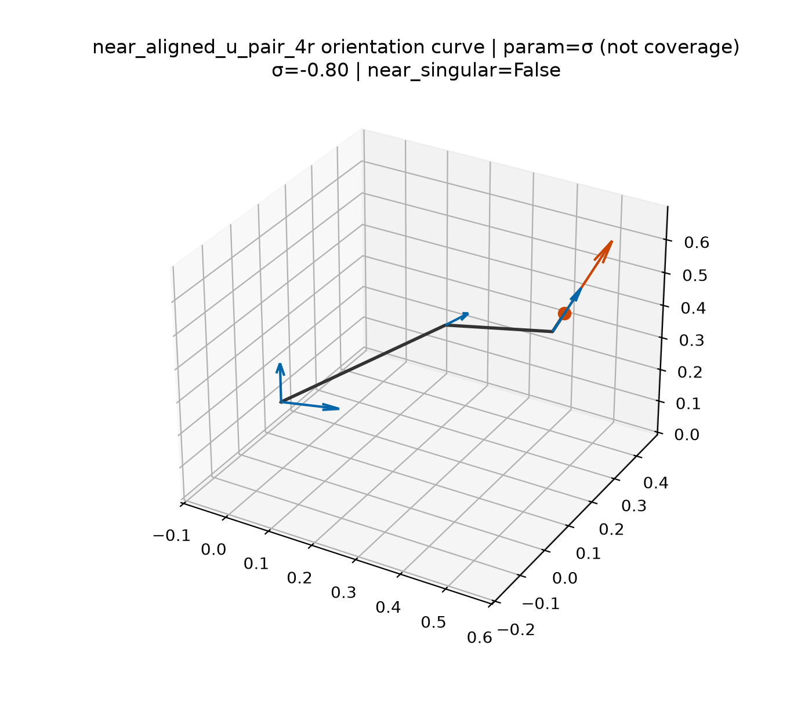
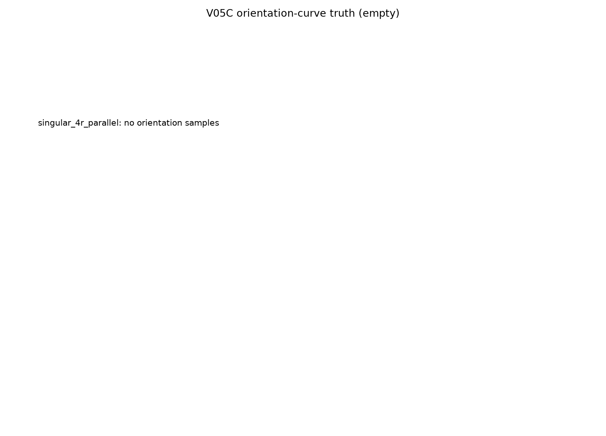
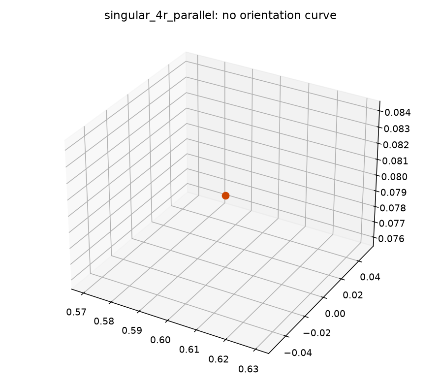

Exports the orientation image and pointing projection of continued spatial
4R + S_v fixed-position fibers from V05B. Representations are
rotation matrices, sign-stabilized quaternions, and rotation vectors — not a
single scalar angle.
SO(3) or S². Singular / near-singular markers are
reported along the continued component. V05D aggregation certificates and V05E
near-aligned rejection are implemented on this corpus.
| Architecture | Orientation | Samples | Pointing | Points | Near-sing. | d-mult. pairs |
|---|---|---|---|---|---|---|
generic_4r | PASS | 81 | PASS | 81 | 0 | 3200 |
exact_u_pair_4r | PASS | 81 | PASS | 81 | 0 | 3200 |
near_aligned_u_pair_4r | PASS | 81 | PASS | 81 | 0 | 3200 |
singular_4r_parallel | FAIL | 0 | FAIL | 0 | 0 | 0 |







